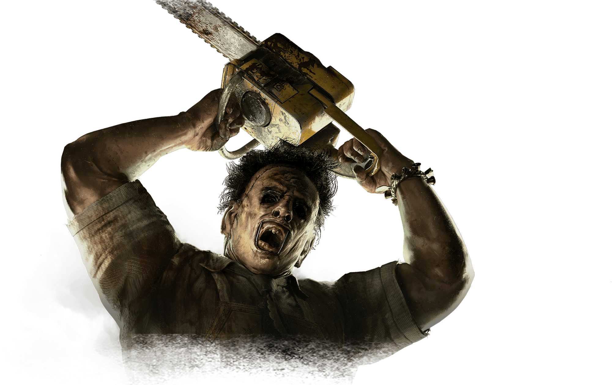
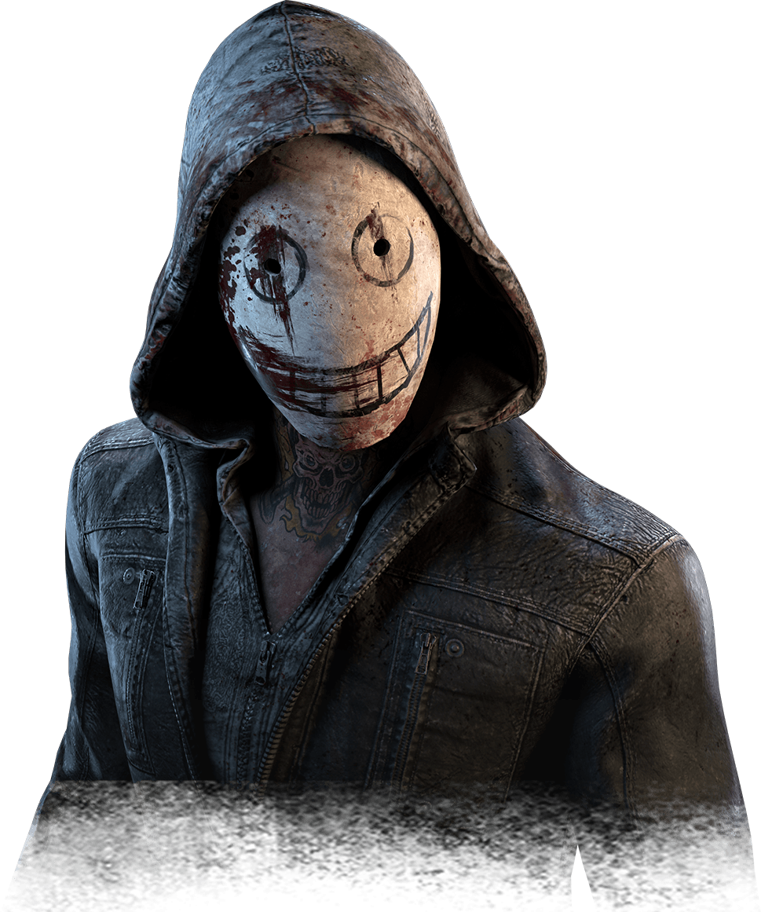
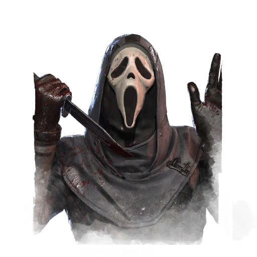

A Enfermeira

A Caçadora

O Canibal
A Praga

A legião
Ghostface
A Enfermeira
Uma enfermeira assassina com poderes assustadores para quem gosta de se esconder nas jogatinas de Dead by Daylight. Com o uso de suas habilidades, ela consegue encontrar facilmente qualquer sobrevivente que está machucado.
A Caçadora
Uma caçadora implacável capaz de atingir os sobreviventes à distância com suas machadinhas. Anna pode fazer uso de suas perks (habilidades) para ter conhecimento do mapa e da localização de seus alvos. Sua máscara de lebre consegue deixá-la ainda mais assustadora.
O Canibal
Vindo diretamente da série de filmes O Massacre da Serra Elétrica, este violento killer é capaz de causar um massivo dano nos sobreviventes quando liga a sua arma. Quando bem usadas, suas habilidades podem impedir os sobreviventes de saber o posicionamento de todos no mapa.
A Praga
Vindo diretamente da série de filmes O Massacre da Serra Elétrica, este violento killer é capaz de causar um massivo dano nos sobreviventes quando liga a sua arma. Quando bem usadas, suas habilidades podem impedir os sobreviventes de saber o posicionamento de todos no mapa.
A legiao
Vindo diretamente da série de filmes O Massacre da Serra Elétrica, este violento killer é capaz de causar um massivo dano nos sobreviventes quando liga a sua arma. Quando bem usadas, suas habilidades podem impedir os sobreviventes de saber o posicionamento de todos no mapa.
Ghostface
Vindo diretamente da série de filmes O Massacre da Serra Elétrica, este violento killer é capaz de causar um massivo dano nos sobreviventes quando liga a sua arma. Quando bem usadas, suas habilidades podem impedir os sobreviventes de saber o posicionamento de todos no mapa.